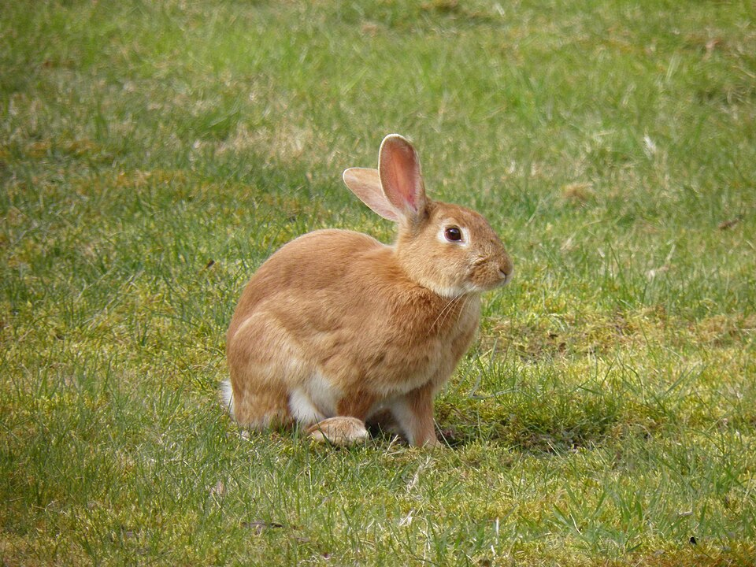

Son apparence
Ses oreilles
Ses longues oreilles lui permettent d'entendre les bruits de très loin.
Son pelage
Son pelage peut être blanc, gris, brun ou tacheté.
Sa queue
Sa queue est courte, ronde et toute douce, comme une petite boule de coton.
Une photo de lapin

Son alimentation
Le lapin mange surtout du foin et de l'herbe. Il aime aussi quelques légumes frais. Clique sur un aliment pour en savoir plus.